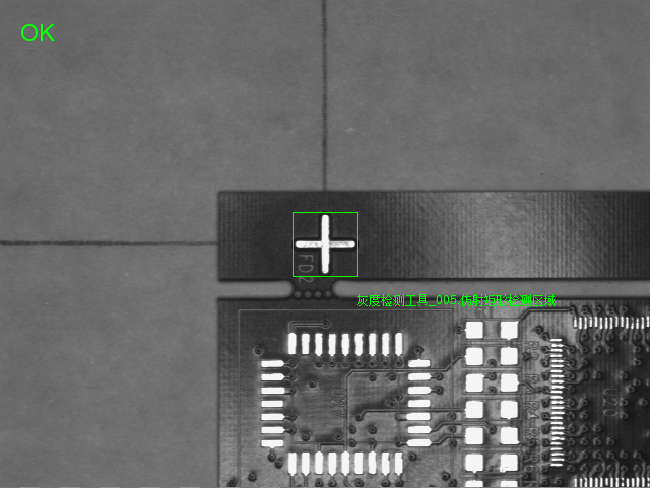
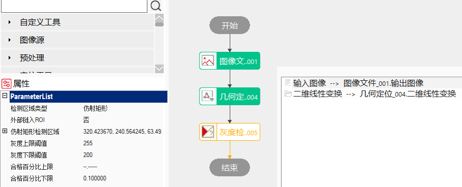
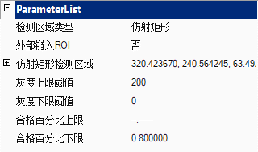
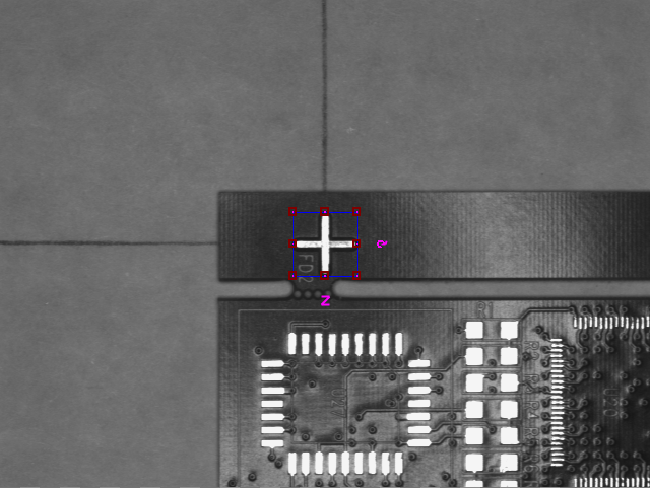
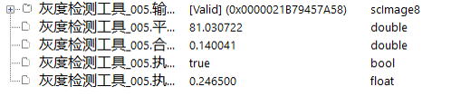

Công cụ kiểm tra mức xám chủ yếu được dùng để kiểm tra tỷ lệ đạt yêu cầu của mức xám trong toàn bộ ảnh đầu vào hoặc một vùng cụ thể của ảnh.

Công cụ kiểm tra mức xám có thể lấy được đặc trưng mức xám trong ảnh hoặc trong vùng ROI của ảnh, như tỷ lệ đạt (tỷ lệ điểm ảnh nằm trong khoảng mức xám), giá trị mức xám trung bình của vùng,… Phù hợp với các trường hợp mục tiêu và nền có sự khác biệt rõ ràng về mức xám để xác định có mục tiêu tồn tại trong vùng kiểm tra hay không.
Tỷ lệ đạt
Số lượng điểm ảnh trong vùng ROI có mức xám nằm trong khoảng giới hạn trên và dưới (như hình 2, phần đỏ là điểm ảnh có mức xám nằm trong khoảng từ 100 đến 255) chia cho tổng số điểm ảnh.
Giá trị mức xám trung bình
Tổng mức xám của tất cả điểm ảnh trong ROI chia cho số lượng điểm ảnh.



Vùng kiểm tra
Vùng thực hiện kiểm tra của công cụ, có 3 loại: hình elip, đa giác, và hình chữ nhật biến dạng (affine rectangle).
Có thể thiết lập bằng chế độ Edit (như hình trên là giao diện thiết lập hình chữ nhật biến dạng) hoặc qua bảng thông số ParameterList. Hình chữ nhật biến dạng có thể liên kết từ bên ngoài.
Ngưỡng mức xám trên và dưới
Khoảng mức xám mục tiêu, thường thiết lập dựa theo mức xám của vật thể hoặc giá trị trung bình của vùng.
Giới hạn trên và dưới của tỷ lệ đạt
Thiết lập phạm vi hợp lệ cho tham số đầu ra tỷ lệ đạt, giá trị nằm trong khoảng [0.0, 1.0], kiểu số thực, độ chính xác 1E-6. Ngoài ra có thể đặt là “--.--” nghĩa là không giới hạn.
Sau khi thiết lập giới hạn trên và dưới cho tỷ lệ đạt, tiến hành thực thi công cụ.
Khi kết quả tỷ lệ đạt nằm trong phạm vi hợp lệ, công cụ báo thực thi thành công; ngược lại báo lỗi.

Không có
| Tên tham số | Mô tả |
|---|---|
| Ảnh đầu vào | Ảnh cần kiểm tra (chiều rộng, chiều cao, kích thước pixel). |
| Biến đổi tuyến tính 2D | Phép tịnh tiến, quay, thu phóng của vật thể so với mẫu. |
| Loại vùng kiểm tra | Có 3 loại: hình elip, đa giác, hình chữ nhật biến dạng. Đối với hình elip, tham số góc quay (Rotation), và đối với hình chữ nhật biến dạng là Rotation và Skew có dải giá trị [-180,180), có thể quan sát và chỉnh trong chế độ Edit. |
| Giới hạn trên tỷ lệ đạt | Giá trị trong khoảng [0.0, 1.0]. Nếu tỷ lệ đạt nhỏ hơn giới hạn này, kết quả công cụ là true, ngược lại là false. |
| Giới hạn dưới tỷ lệ đạt | Giá trị trong khoảng [0.0, 1.0]. Nếu tỷ lệ đạt lớn hơn giới hạn này, kết quả công cụ là true, ngược lại là false. |
| Ngưỡng mức xám trên | Giá trị từ 0 đến 255. Mức xám trong khoảng này được tính là hợp lệ. Ngưỡng dưới không lớn hơn ngưỡng trên. |
| Ngưỡng mức xám dưới | Giá trị từ 0 đến 255. Mức xám trong khoảng này được tính là hợp lệ. Ngưỡng dưới không lớn hơn ngưỡng trên. |
| Giao diện nâng cao | Không có |
| Tên tham số | Mô tả |
|---|---|
| Ảnh đầu vào | Xuất thông tin chiều rộng, chiều cao, kích thước pixel của ảnh. |
| Kết quả tỷ lệ đạt | Tỷ lệ hợp lệ thực tế sau khi tính toán. |
| Mức xám trung bình | Giá trị trung bình mức xám của vùng được tính toán. |
| Kết quả thực thi | Kết quả thực thi của công cụ. |
| Thời gian thực thi | Thời gian thực thi của công cụ. |
参见“\Samples\灰度检测工具.gvp”。